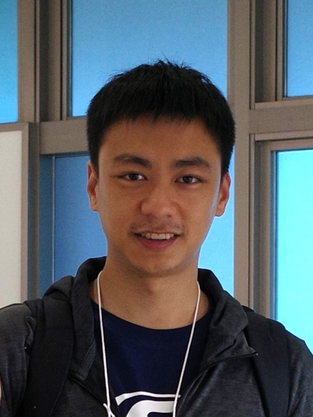

Yu-Jie Zhang is an incoming Assistant Professor at the National University of Singapore. Previously, he was an IFDS Postdoctoral Scholar at the University of Washington, working with Kevin Jamieson, and a Postdoctoral Researcher at RIKEN AIP. He received his Ph.D. from the University of Tokyo under the supervision of Masashi Sugiyama. His research focuses on the mathematical foundations and algorithmic design of interactive learning, particularly online optimization, bandits, and reinforcement learning. His work, published in venues such as NeurIPS, ICML, and JMLR, explores how learning algorithms can adapt to uncertain environments with provable performance guarantees.
Short Abstract: Online learning is about making decisions sequentially and improving them based on incoming feedback. In many such problems, the curvature of the loss function is known to enable substantially faster learning when the goal is to compete with the best fixed decision. But what happens when the best decision changes over time? In this talk, I will explore when and how curvature can accelerate learning in such non-stationary settings. We show that, with bounded gradients, curvature can accelerate learning on arbitrary bounded convex domains, without the out-of-domain predictions required by earlier studies. However, when gradients can be unbounded, as in classical online portfolio selection, the picture changes. We find that faster rates depend critically on the geometric structure of the changing comparators, particularly their position relative to the boundary. We establish these findings through rigorous dynamic regret analysis, introducing new mixability-based arguments to exploit loss curvature.